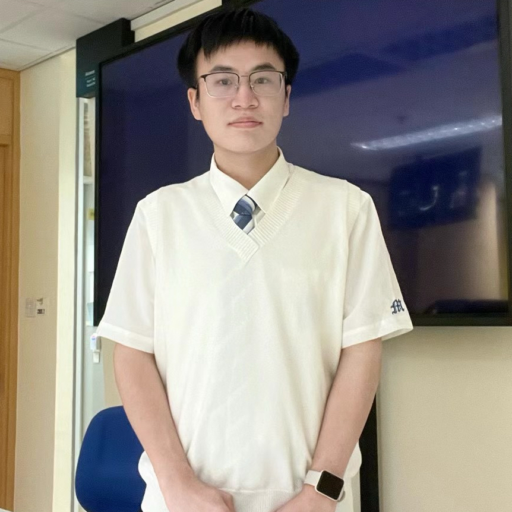
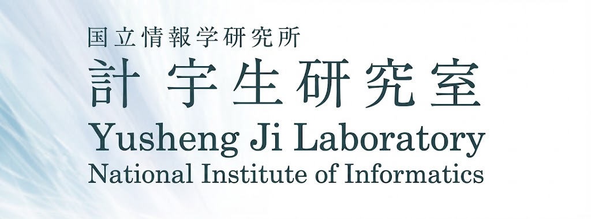

Postdoctoral Researcher
Research Focus: Reliability-aware Agent Execution and Resource Management
AI Agent · LLM · Reinforcement Learning · Digital Twin · Edge AI
My research focuses on reliability-aware AI agent execution and resource management across AI agents, LLMs, digital twins, and edge AI.
Department of Computing (COMP)
Office: PQ 504, PQ Wing, PolyU, Hung Hom, Hong Kong.
Email:
xiang-chun.chen AT connect.polyu.hk
Google
Scholar |
GitHub
Xiangchun Chen is a Postdoctoral Researcher at The Hong Kong Polytechnic University. He received his Ph.D. from the Department of Computing, The Hong Kong Polytechnic University, supervised by Prof. Jiannong Cao, IEEE Fellow. Previously, he received his B.E. degree in Computer Science and Technology from the Faculty of Computing, Harbin Institute of Technology in 2021.
His research interests currently focus on reliability-aware AI agent execution and resource management across AI agents, LLMs, digital twins, and edge AI.
[TMC]
Decentralized Task Offloading in Collaborative Edge Computing: A Digital Twin Assisted
Multi-Agent Reinforcement Learning Approach,
Xiangchun Chen, Jiannong Cao, Rui Cao, Yuvraj Sahni, Mingjin Zhang, and Yusheng Ji.
In IEEE Transactions on Mobile Computing, vol. 25, no. 4, pp. 4776–4790, 2026.
(CCF A, SCI I, JCR Q1).
[TMC]
Mobility-aware Dependent Task Offloading in Edge Computing: A Digital Twin-assisted
Reinforcement Learning Approach,
Xiangchun Chen, Jiannong Cao, Yuvraj Sahni, Mingjin Zhang, Zhixuan Liang, and Lei
Yang.
In IEEE Transactions on Mobile Computing, vol. 24, no. 4, pp. 2979–2994, 2025.
(CCF A, SCI I, JCR Q1).
[TCC]
Dynamic Task Offloading in Edge Computing based on Dependency-aware Reinforcement Learning,
Xiangchun Chen, Jiannong Cao, Yuvraj Sahni, Shan Jiang, and Zhixuan Liang.
In IEEE Transactions on Cloud Computing, vol. 12, no. 2, pp. 594–608, 2024.
(IEEE Transactions on Cloud Computing Best Paper Award 2024, CCF B, SCI II, JCR Q1).
[Preprint]
Reliability-aware AI Agent Execution in Collaborative Edge Computing: A World Model Approach,
Xiangchun Chen, Jiannong Cao, Longxiang Gao, Xiaoming Wu, and Yusheng Ji.
Submitted to IEEE Transactions on Parallel and Distributed Systems (TPDS), 2026 (arXiv:2611.32520).
(Under Review).
[MASS]
Digital Twin-assisted Reinforcement Learning for Resource-aware Microservice Offloading in Edge
Computing,
Xiangchun Chen, Jiannong Cao, Zhixuan Liang, Yuvraj Sahni, and Mingjin Zhang.
In IEEE 20th International Conference on Mobile Ad Hoc and Smart Systems (MASS), pp. 28–36, 2023.
(CCF-C).
[ICDCS]
Efficient KV Cache Migration for Geo-Distributed LLM Inference in Collaborative Edge Computing,
Mingjin Zhang, Jiannong Cao, Tao Wu, Xiangchun Chen, and Ne Wang.
In the 46th IEEE International Conference on Distributed Computing Systems (ICDCS), pp. 272–282, 2026.
(CCF-B).
[ICNC]
Resource-efficient Parallel Split Learning in Heterogeneous Edge Computing,
Mingjin Zhang, Jiannong Cao, Yuvraj Sahni, Xiangchun Chen, and Shan Jiang.
In 2024 International Conference on Computing, Networking and Communications (ICNC), pp. 794–798, 2024.
